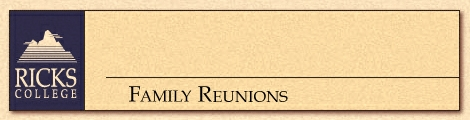

Outdoor Family Reunions take place at the Ricks College Outdoor Learning Center, located near the Teton Mountain Range.For more information, call (208) 356-1040 or e-mail program coordinator.Work out your own individual family reunion with Ricks College that could include the following: horseback riding, canoeing, blackpowder rifles, rappelling, initiative course, campfire programs, family meetings, plus many more workshops.
We have ten sleeping cabins available with three bunk beds in each, for a sleeping capacity of six people per cabin. For larger groups, we have campsites for campers, trailers (no hook-ups), tents, etc. Meals will be prepared by the Ricks College staff at the lodge, or over a campfire.
The family reunion program is a "hands-on" experience. Not only do those attending learn practical outdoor skills, but they also develop and take home many qualities such as: goal setting, leadership, trust, spiritual growth, an increased awareness about nature, self-confidence, improved family relations, to name just a few.